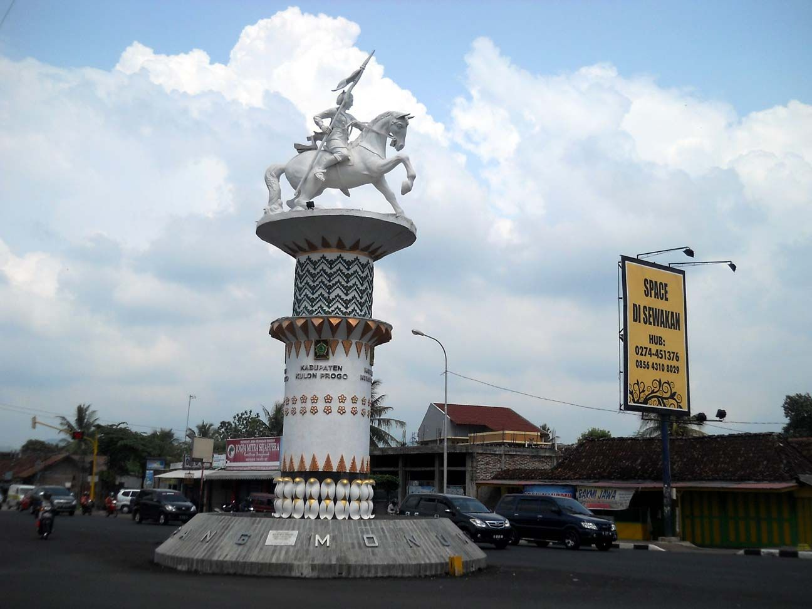

Kabupaten Kulon Progo ꦏꦸꦭꦺꦴꦤ꧀ꦥꦿꦒ adalah sebuah kabupaten di Provinsi Daerah Istimewa Yogyakarta. Ibu kotanya adalah Kapanewon Wates. Kabupaten ini berbatasan langsung dengan Kabupaten Sleman, Kabupaten Bantul di timur, Samudra Hindia di selatan, Kabupaten Purworejo di barat, serta Kabupaten Magelang di utara. Nama Kulon Progo diambil dari kalimat Kulone Kali Progo yang berarti sebelah barat Sungai Progo (kata kulon dalam bahasa Jawa artinya barat). Kali Progo membatasi kabupaten ini di sebelah Timur.
Kulon Progo terdiri atas 12 kapanewon, yang dibagi lagi atas 87 kalurahan dan satu kelurahan, serta 930 Pedukuhan (sebelum otonomi daerah dinamakan Dusun). Ibu kota di Kapanewon Wates, yang berada sekitar 25 km sebelah barat daya dari Kota Yogyakarta, di jalur utama lintas selatan Jawa (Surabaya–Yogyakarta–Bandung). Kapanewon Wates juga dilintasi jalur kereta api lintas selatan Jawa. Kulon Progo menggunakan kode pos 55611 (lama) dan 55600/55651 (baru).
Bagian barat laut wilayah kabupaten ini berupa pegunungan (Bukit Menoreh), dengan puncaknya puncak Suroloyo (1019 m), di perbatasan dengan Kabupaten Magelang. Sedangkan di bagian selatan merupakan dataran rendah yang landai hingga ke pantai. Pantai yang ada di Kulon Progo adalah Pantai Congot, Pantai Glagah Indah (10 km arah barat daya kota Wates atau 35 km dari pusat Kota Yogyakarta) dan Pantai Trisik.
Penduduk
| No | Jenis Kelamin | Jumlah |
|---|---|---|
| 1 | Laki-laki | 220.731 Jiwa |
| 2 | Perempuan | 224.587 Jiwa |
| 3 | Total | 445.318 Jiwa |
Kecamatan
- Nanggulan
- Sentolo
- Wates
- Panjatan
- Pengasih
- Kalibawang
- Samigaluh
- Girimulyo
- Kokap
- Temon
- Galur
- Lendah
Sumber: Pemkab Kulon Progo dan Wikipedia

